원자력기사 (2013-09-07 기출문제)
1과목: 원자력기초
1. 가압경수로에서 사용하는 가연성 독물질의 기능 중 틀린 것은?
- 가연성 독물질이 점차 연소되어 연료연소로 줄어드는 노심의 반응도를 부분적으로 보상한다.
- 더 많은 신연료를 장전할 수 있게 한다.
- 노심의 수직방향 출력분포를 균일화 한다.
- 주기초 붕소농도가 높을 때, 감속재 온도계수가 정(+)이 되는 것을 방지한다.
(정답률: 알수없음)

2. 중성자에 대한 거시적 단면적을 설명한 것 중 맞는 것은?
- 단위는 barn으로 나타내며 10-24cm2에 해당한다.
- 총 거시적 단면적은 거시적 산란단면적과 거시적 방사포획 단면적의 합을 의미한다.
- 중성자가 단위길이 진행 동안 해당 원자핵들과 반응할 확률을 의미한다.
- 중성자가 해당 원자핵들과 단위부피 당 단위시간 당 반응한 개수를 나타낸다.
(정답률: 알수없음)
3. 원자로 제어에서 중요한 역할을 하는 지발중성자는 핵분열 즉시 방출되는 즉발 중성자와 달리 핵분열 시 지연 방출된다. 다음 중 그 이유로 맞는 것은?
- 핵분열 시 감속재에 따른 지연감속으로 인해 방출되기 때문이다.
- 핵분열 즉시 방출되는 중성자로서 중성자의 방출에너지가 낮기 때문이다.
- 핵분열 시 생성되는 중성자의 평균수명이 약 10-5초로 길기 때문이다.
- 핵분열 후 분열 생성물이 방사성 붕괴를 해가는 과정에서 방출되기 때문이다.
(정답률: 알수없음)
4. 아래의 중성자 확산 방정식에서
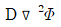
의 물리적 의미는?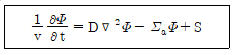
- 단위면적 당, 단위 시간 당 확산되는 중성자수
- 단위길이 당, 단위 시간 당 확산되는 중성자수
- 단위부피 당, 단위 시간 당 확산되는 중성자수
- 단위 시간 당 확산되는 중성자수
(정답률: 알수없음)
5. 다음 중 운전 중인 원자로의 정지 여유도를 감소시키는 것은? (단, 붕소농도는 일정하다고 가정한다.)
- 원자로 운전 중 연료의 연소
- 원자로 운전 중 가연성 독물질 연소
- 원자로 출력변동에 따른 Sm 축적
- 원자로 출력변동에 따른 Xe 축적
(정답률: 알수없음)
6. 다음 중 감마선이 물질과 상호작용하여 생기는 현상이 아닌 것은?
- Compton 산란
- 광전효과
- 쌍전자 생성
- 방사포획
(정답률: 알수없음)
7. 국내에서 운전 중인 CANDU 원전에서 노심출력을 제어하기 위해 액체영역제어계통(LZCS)에서 사용하고 있는 중성자 흡수물질은?
- 경수
- 중수
- 붕산
- 가돌리움
(정답률: 알수없음)
8. 무한 크기의 판형 원자로에서 1군 확산방정식
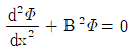
으로 쓸 수 있다. 여기서 버클링 B2을 표현한 식은? (단, D는 확산계수, ∑a : 거시적 흡수단면적이다.)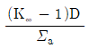
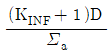
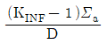
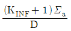
(정답률: 알수없음)
9. 원자로 기동 중 Keff는 0.9이고 계수율은 100cps이었다. 얼마 후 계수율이 500cps가 되었다면, Keff는 얼마인가?
- 0.925
- 0.95
- 0.98
- 0.995
(정답률: 알수없음)
10. 악티늄(Ac)의 원자번호는 89, 질량수 227, 원자량은 227amu일 때, 결합에너지는? (단, 전자 질량 0.00⑤49amu, 양자질량 : 1.007276amu, 중성자 질량 1.008665, 1amu = 931.5MeV이다.)
- 0 MeV
- 1,763 MeV
- 128,547 MeV
- 211,450 MeV
(정답률: 알수없음)
11. 가압경수로의 감속재가 갖추어야 할 조건으로 거리가 먼 것은?
- 원자량이 커야 한다.
- 중성자를 흡수할 확률이 작아야 한다.
- 충돌 당 많은 양의 중성자 에너지를 흡수하여야 한다.
- 중성자와 산란반응을 일으킬 확률이 커야 한다.
(정답률: 알수없음)
12. 짧은 시간 동안(수초 혹은 수분에 걸쳐) 원자로 반응도에 영향을 미치는 인자는?
- Xe 농도
- 연료 온도
- 연료연소
- 플루토늄 축적
(정답률: 알수없음)
13. 다음 중 노심에서 연료온도가 증가할 경우 공명흡수 증가하는 현상으로 핵분열 증가 시 출력증가를 제한하여 원자로 고유 안전성에 가장 큰 영향을 주는 인자는?
- Xe의 독작용
- 기포계수
- 도플러 효과
- 감속재 온도계수
(정답률: 알수없음)
14. 흑연 감속재를 사용하는 원자로에서 중성자가 2MeV에서 0.025eV로 감속할 때의 총 충돌수는? (단, 평균에너지 손실률(ζ) : 0.158)
- 1⑤
- 115
- 125
- 135
(정답률: 알수없음)
15. 원자로 내에서 핵분열 시 방출되는 다음 에너지원 중에서 회수가 가능하지 않은 것은?
- 핵분열단편
- 즉발감마선
- 중성미자
- 베타선
(정답률: 알수없음)
16. 원자로가 100% 출력으로 장기간 운전하다가 t = 0에서 정지되었다. 정지된 이후 노심에서 I135, Xe135의 농도변화를 보기에 골라 바르게 나타낸 것은?
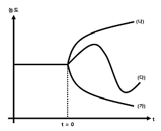
- I135의 농도변화는 (가), Xe135의 농도변화는 (다)이다.
- I135의 농도변화는 (나), Xe135의 농도변화는 (다)이다.
- I135와 Xe135의 농도변화는 모두 (가)이다.
- I135와 Xe135의 농도변화는 모두 (다)이다.
(정답률: 알수없음)
17. 다음 중 자기 자신은 핵분열을 일으키지 않지만, 중성자를 흡수하면 핵분열성 독물질로 변하는 물질(동위원소)이 아닌 것은?
- Th232
- U238
- Pu239
- Pu240
(정답률: 알수없음)
18. 유효 증배계수 Keff는 5개 인자 즉, ɛ・P・η・L의 곱으로 정의될 수 있다. 각 인자에 대한 설명 중 틀린 것은? 여기서 η는 중성자 재생률, ɛ는 속중성자 핵분열계수, P: 공명이탈확률, f: 열중성자 이용률, L: 누설이탈률
- 공명흡수이탈률 P은 열외중성자가 공명흡수 영역에 흡수되지 않고 통과하여 열중성자가 되는 확률을 의미한다.
- 속중성자 핵분열계수 ɛ는 모든 중성자에 의한 핵분열로 생성되는 중성자수를 열중성자에 의한 핵분열로 생성되는 중성자수로 나눈 값이다.
- 중성자 재생률 η은 열중성자에 의한 핵분열 시에 발생하는 중성자수이다.
- 열중성자 이용률 f은 핵분열성 물질에 의한 모든 원자로 내 물질에 흡수되는 중성자수로 나눈 값이다.
(정답률: 알수없음)
19. 1MW이던 원자로의 출력이 1분만에 100MW로 증가하였다. 이 원자로의 출력이 100MW에서 500MW로 증가하는데 걸리는 시간은?
- 약 7초
- 약 12초
- 약 21초
- 약 35초
(정답률: 알수없음)
20. 양자수가 중성자수 보다 많은 어떤 원자핵의 베타붕괴 후 양자수, 중성자수 및 질량수는?
- Z, A-Z, A
- Z+1, A-Z-1, A
- Z-1, A-Z+1,A
- Z+1, A-Z, A+1
(정답률: 알수없음)
2과목: 핵재료공학 및 핵연료관리
21. 금속면에서 비교적 화학적 활성이 큰 부위부터 부식이 집중적으로 진행되는데 비균질 부위나 보호피막이 파괴된 부위에서 일어나는 부식은?
- 마모부식
- 점식
- 응력부식균열
- 틈새부식
(정답률: 알수없음)
22. 가압경수로형 원전의 1차계통 수화학 관리에 관한 설명으로 가장 맞는 것은?
- 원자로의 출력운전 시 냉각재를 약 산성 조건으로 유지한다.
- 냉각재에 존재하는 방사화된 부식 생성물은 주로 망간 페라이트 형태이다.
- 원자로를 정지하기 전에 냉각재의 부식생성물을 용해시키기 위해 수산화리튬을 첨가한다.
- 원자로의 기동운전 시 냉각재의 용존산소 제거를 위해 하이드라진을 첨가한다.
(정답률: 알수없음)
23. 다음 중 방사평형에 관한 설명으로 틀린 것은?
- 모핵종의 반감기가 딸핵종 반감기보다 대략 100배 정도 긴 경우 과도평형이 발생한다.
- 모핵종의 반감기가 딸핵종의 반감기보다 짧을 경우, 방사평형 현상은 존재하지 않는다.
- 영속평형에서는 오랜 시간이 지난 후에 모핵종의 붕괴수와 딸핵종의 붕괴수가 같아진다.
- 모핵종의 반감기가 딸핵종의 반감기보다 짧으면 결국 딸핵종은 붕괴해버리고 모핵종만이 자신의 반감기에 따라 감쇠한다.
(정답률: 알수없음)
24. 냉각재에 존재하는 방사화 부식생성물인 크러드(CRUD)의 특성 중 틀린 것은?
- pH를 높게 유지하면 크러드의 침적률을 감소시킬 수 있다.
- 크러드는 저열속 부위에 침적하는 경향이 있다.
- 크러드는 방사선속에서 침적이 증가한다.
- 크러드는 스테인레스강보다 지르칼로이 표면에서 두껍게 침적되는 경향이 있다.
(정답률: 알수없음)
25. 다음 중 연료손상 메커니즘(Mechanism)이 아닌 것은?
- Bowing
- Creep
- Fretting
- Sipping
(정답률: 알수없음)
26. 600MWe급 중수로의 가동률은 80%이고 열에너지를 전기에너지로 바꾸는 효율은 약 30%, 핵분열 물질에서 나오는 열은 9.5×105MWD/MT, 열발생률은 1MT(1,000kg) 당 6,800MWD이라면, 농축 우라늄의 공급 속도는?
- 21.2kg/day
- 235.3kg/day
- 392.3kg/day
- 3,022.2kg/day
(정답률: 알수없음)
27. 10년전 외국으로부터 수입된 육불화우라늄이 천연우라늄인지 또는 사용 후 연료의 재처리를 통해 회수된 우라늄인지를 가장 쉽게 판별할 수 있는 방법은?
- U234 방사능을 측정
- U237 방사능을 측정
- U236 방사능을 측정
- U238 방사능을 측정
(정답률: 알수없음)
28. 액체폐기물 처리계통에서 처리 효율이 가장 큰 방법은?
- 여과법
- 이온교환수지법
- 증발법
- 역삼투압법
(정답률: 알수없음)
29. 우라늄 농축방법 중 기체확산법과 원심분리법에서 주로 사용되는 동위원소 화합물은?
- U235F618 및 U238F618
- U235F619 및 U238F618
- U235F618 및 U238F619
- U235F619 및 U238F619
(정답률: 알수없음)
30. 다음은 액체폐기물 처리를 위한 역삼투압 패키지 처리 공정도와 각 단계별 제염계수이다. 유입되는 액체폐기물에 Co와 Cs이 각각 106Bq씩 포함되어 있다면, 배출되는 액체폐기물에 존재하는 방사능량은?
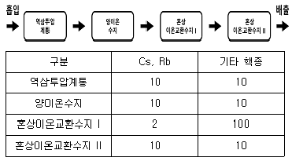
- Co : 1Bq, Cs : 500Bq
- Co : 50Bq, Cs : 50Bq
- Co : 1Bq , Cs : 200Bq
- Co : 200Bq , Cs : 200Bq
(정답률: 알수없음)
31. 중성자 방사화분석을 위하여 방사성 핵종 A에 일정한 시간 동안 중성자 조사시켜 방사성핵종 B를 생성시킨 후 방사성 핵종의 B의 양을 측정하였다. 이에 대한 설명으로 맞는 것은?
- 중성자 플럭스가 낮을수록 방사성 핵종 B의 양이 더 많아진다.
- 방사성핵종 B의 중성자 반응단면적이 클수록 방사성핵종 B의 양이 더 많아진다.
- 방사성핵종 A의 초기 존재량이 작을수록 방사성핵종 B의 양이 더 많아진다.
- 방사성핵종 B의 붕괴상수가 작을수록 방사성핵종 B의 양이 더 많아진다.
(정답률: 알수없음)
32. 연소도 이득(Burn-up Credit)에 관한 설명으로 틀린 것은?
- 핵임계 안전성과 관련이 있다.
- 사용후연료의 운전 안전성 평가에 적용할 수 있다.
- 사용후연료의 저장 안전성 평가에 적용할 수 있다.
- 사용후연료의 반응도는 신연료보다 크다.
(정답률: 알수없음)
33. 국내 사용후연료 습식저장조가 갖추어야 할 안전기준이 아닌 것은?
- 미임계 유지능력 확보
- 피동냉각능력 확보
- 차폐유지 능력확보
- 방사선 준위 감시능력 확보
(정답률: 알수없음)
34. 다음 중 천층처분 시설이 아닌 것은?
- 영국 : 드릭
- 프랑스 : 로브
- 스웨덴 : 포스마크
- 일본 : 롯카쇼뮤라
(정답률: 알수없음)
35. 지하매질의 밀도가 1g/cm3이고 유효공극률은 0.5이다. 이 지하매질에 대한 어떤 방사성핵종의 분배계수가 0.1cm3/g일 때, 방사성핵종의 지연계수는 얼마인가?
- 0.8
- 1.0
- 1.2
- 1.5
(정답률: 알수없음)
36. 다음 중 가압경수로 연료주기에는 필요하지만 가압중수로 연료주기에서 필요하지 않은 공정만을 묶은 것은?
- 정련, 농축
- 농축, 변환
- 농축, 재변환
- 변환, 재변환
(정답률: 알수없음)
37. APR-1400 원전용 연료집합체에 대한 설명 중 틀린 것은?
- 236개의 연료봉 및 독물질봉으로 구성되어 있다.
- 총 12개의 스페이서 그리드로 OPR-1000 원전용 연료집합체보다는 1개 더 많다.
- 중간 지지격자는 9개로 구성되고 재질은 ZIRLO이다.
- 보호 지지격자는 상, 하부 각각 1개씩 설치되어 이물질 여과 및 연료봉 끝단을 지지하여 진동에 의한 프레팅 마모를 감소시킨다.
(정답률: 알수없음)
38. 우라늄 연료주기 관련시설 중에서 Cf252가 필요한 시설만을 묶은 것은?
- 우라늄 농축시설 : 원자력발전소
- 우라늄 농축시설 : 핵연료 가공시설
- 핵연료 가공시설 : 원자력발전소
- 우라늄 변환시설 : 핵연료 가공시설
(정답률: 알수없음)
39. 재처리 공장에서 핵임계 안전관리 방법이 아닌 것은?
- 질량제어
- 구조제어
- 체적제어
- 온도제어
(정답률: 알수없음)
40. 천연우라늄 (농축도 0.71%)로부터 3% 농축도의 우라늄 3kg을 얻는데 필요한 천연우라늄의 양은? (단, 농축공정은 기체확산법을 사용하고 농축공정의 폐기 농축도는 0.25%로 한다.)
- 9.96kg
- 11.96kg
- 13.96kg
- 15.96kg
(정답률: 알수없음)
3과목: 발전로계통공학
41. 다음 중 가압경수로형 원전의 핵연료봉 내 온도분포 T와 열중성자속 분포()를 바르게 나타낸 것은?
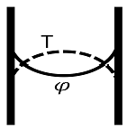
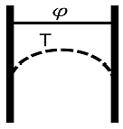
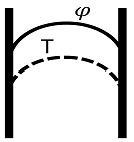
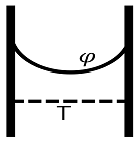
(정답률: 알수없음)
42. 다음 중 냉각재 펌프에서 발생되는 공동(Cavitation) 현상에 대한 설명으로 틀린 것은?
- 펌프 진동의 원인이 된다.
- 펌프 회전체 침식의 원인이 된다.
- 압력 – 온도 운전제한 곡선에 영향을 미친다.
- 입구 측 유체의 온도가 높을수록 발생이 억제된다.
(정답률: 알수없음)
43. 다음 원자력발전소 2차 계통에 대한 TS선도에서 증기발생기에 해당하는 구간은?
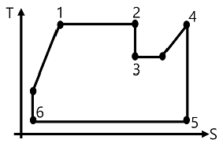
- 1 ~ 2 구간
- 3 ~ 4 구간
- 4 ~ 5 구간
- 5 ~ 6 구간
(정답률: 알수없음)
44. 다음 중 가압경수로형 원자력발전소 1차 계통의 산소농도와 붕산농도를 조절하며 냉각재 펌프에 밀봉수를 공급하는 계통은?
- 화학 및 체적제어계통
- 비상 노심냉각계통
- 잔열제거계통
- 발전소 보호계통
(정답률: 알수없음)
45. 일본 후쿠시마 원전사고 시 원자로 건물 내에서 수소폭발이 발생하였다. 수소 발생 주원인은?
- LOCA로 고온의 수증기가 연료 피복재와 산화반응하여 발생
- 계통 내 알루미늄 재질의 부식으로 발생
- 물의 방사화로 인해 발생
- pH제어를 위해 주입한 냉각재 내의 수소 방출로 인해 발생
(정답률: 알수없음)
46. 다음 중 열역학적으로 발전소 2차 계통의 열효율을 높일 수 있는 방법이 아닌 것은?
- 복수기의 압력을 높인다.
- 급수의 온도를 낮춘다.
- 증기발생기의 운전압력을 높인다.
- 고압터빈과 저압터빈 사이에 재열기를 설치한다.
(정답률: 알수없음)
47. 다음 중 경수로형 원자로의 운전 중 핵연료봉 손상유무를 확인하는데 일반적으로 사용하는 방법이 아닌 것은?
- 냉각재 내의 I131 핵종의 방사능 준위
- 냉각재 내의 Xe133 핵종의 방사능 준위
- 냉각재 내의 Cs137 핵종의 방사능 준위
- 냉각재 내의 Sm149 핵종의 방사능 준위
(정답률: 알수없음)
48. 다음 중 “유체 내의 대류에 의한 열전달과 전도에 의한 열전달의 비”를 나타내는 무차원 수는?
- 프란들 수
- 누셀 수
- 프라우드 수
- 레이놀드 수
(정답률: 알수없음)
49. 수력학적 성능이 동일한 펌프 두 대가 병렬로 구성되어 있는 냉각재 계통에서 펌프 한 대를 운전하다가 두 대 모두 운전할 경우에 대한 설명 중 맞는 것은?
- 계통 수두는 크게 증가하고, 유량은 거의 변화가 없다.
- 계통 수두와 유량이 거의 변화가 없다.
- 계통 수두는 거의 변화가 없고 유량은 크게 증가된다.
- 계통 수두와 유량이 모두 크게 증가된다.
(정답률: 알수없음)
50. 차압식 유량 검출기와 오리피스를 이용하여 유량을 측정할 때, 실제 유량이 일정한 상태에서 지시되는 유량 값이 증가하는 이유는?
- 계통 압력 감소
- 오리피스에 이물질 부착
- 시간경과에 따른 오리피스 침식
- 고압측 계측기관 누설
(정답률: 알수없음)
51. 핵비등이탈(DNB) 지점에 도달한 경우 연료봉 피복재로부터 냉각재로의 열전달 현상을 맞게 설명한 것은? (단, 연료봉 피복재와 냉각재 사이의 온도 차이를 △T라하고 열유속은 Heat Flux라고 한다.)
- 연료봉 피복재에 증기기포가 완전히 덮여 △T 대비 열유속이 급격히 감소한다.
- 연료봉 피복재에 증기기포가 완전히 덮여 △T대비 열유속이 급격히 증가한다.
- 증기기포가 연료봉 피복재를 덮기 시작하여 △T 대비 열유속이 급격히 감소한다.
- 증기기포가 연료봉 피복재를 덮기 시작하여 △T 대비 열유속이 급격히 증가한다.
(정답률: 알수없음)
52. 원자로 제어봉이 갖추어야 할 특성이 아닌 것은?
- 열중성자 흡수단면적이 크다.
- 내부식성이 크다.
- Creep 현상이 잘 일어난다.
- 방사선에 안전해야 한다.
(정답률: 알수없음)
53. 공학적 안전설비 중 비상 노심냉각계통(ECCS)의 종류에 포함되지 않는 것은?
- 안전주입계통
- 보조급수계통
- 재순환 냉각계통
- 안전주입탱크
(정답률: 알수없음)
54. 다음 중 냉각재계통 저온 과압보호(LTOP)를 위한 기기는?
- 가압기 안전밸브
- 주증기 안전밸브
- 가압기 안전감압밸브
- 정지냉각계통 흡입측 방출밸브
(정답률: 알수없음)
55. 가압경수로형 원자로 핵연료 UO2의 팽윤 및 고밀화에 대한 설명 중 틀린 것은?
- 팽윤은 핵연료의 밀도를 감소시키고 부피를 팽창시킨다.
- 핵연료 고밀화는 핵연료의 밀도를 증가시키고 부피를 감소시킨다.
- 팽윤은 핵분열 생성물의 집적에 의해 발생한다.
- 팽윤과 고밀화는 연소도가 증가할수록 많이 발생한다.
(정답률: 알수없음)
56. 가압열충격(PTS)에 의한 압력용기 파손을 발생시킬 수 있는 주요 원인이 아닌 것은?
- 중성자 조사에 의한 압력용기의 취성 증가
- 사고 시 저온의 안전주입수 주입에 따른 압력용기 냉각
- 압력용기 용접부 용접봉의 Cu의 함유량
- 압력용기와 냉각재의 온도 증가
(정답률: 알수없음)
57. 다음의 기기 중에서 1차 기기냉각수가 공급되는 안전성 관련 기기가 아닌 것은?
- 정지냉각(잔열제거) 열교환기
- RCP 밀봉수 냉각기
- 비상발전기 냉각기
- 사용후연료 저장조 열교환기
(정답률: 알수없음)
58. 가압경수로형 원자로 압력용기의 I 가동기간 중에 중성자 조사에 의한 취화상태를 평가하기 위한 압력용기 감시시편 시험방법이 아닌 것은?
- 충격시험
- 수압시험
- 파괴인성시험
- 인장시험
(정답률: 알수없음)
59. 원자로에 있는 연료를 사용 후 연료 저장조로 인출한 후 소내외 교류전원이 완전 상실(Station Black Out : SBO)되었다. 이 사건 이후 사용 후 연료 저장조에서 발생되는 증상은?
- SBO 상태로 장기간 경과되면 연료가 물 밖으로 노출될 수 있다.
- 자연순환이 되어 물의 비등은 발생되지 않는다.
- 물의 온도는 올라갈 수 있으나 충분한 물의 양이 확보되어 있어 연료봉의 온도는 상승하지 않는다.
- 원자로에서 인출되어 사용후연료 저장조로 이동하여 저장된 경과시간이 짧을수록 비등 발생 가능성이 낮다.
(정답률: 알수없음)
60. 국내 경수로 원전의 원자로를 보호하기 위한 신호가 아닌 것은?
- 가압기 저압력
- 원자로 과출력
- 냉각재 저유량
- 냉각재 저온도
(정답률: 알수없음)
4과목: 원자로 안전과 운전
61. 다음 중 국내 가압경수로의 원자로 보호계통에 대한 설명으로 틀린 것은?
- 제어봉 구동장치의 전원이 상실되면 제어봉이 삽입된다.
- 핵비등 이탈률이 제한치보다 높으면 원자로가 정지된다.
- 2차계통의 열제거 능력이 상실되면 원자로가 정지된다.
- 기동운전 시 중성자속의 변화율이 제한치보다 높으면 정지된다.
(정답률: 알수없음)
62. 다음 중 모든 소내외 교류전원 상실 시 안전관련 모선에 자동으로 전력을 공급하는 설비는?
- 축전지
- 비안전 디젤발전기
- 대체 교류 디젤발전기
- 비상 디젤발전기
(정답률: 알수없음)
63. 다음 중 천연우라늄을 연료로 사용하는 가압중수로(PHWR)형 노형에서 냉각재로 중수를 사용하는 근본적인 이유는?
- 중수의 작은 중수 흡수단면적
- 중성자에 의한 냉각재 방사화 저감
- 냉각재계통 부식 최소화
- 열전달 향상
(정답률: 알수없음)
64. 원전에서 일반주민의 출입 및 거주를 통제하기 위하여 설정한 구역을 무엇이라 하는가?
- 방사선 관리구역
- 제한구역
- 인구 저밀도 구역
- 방사선 비상계획 구역
(정답률: 알수없음)
65. 어떤 원자로를 다음과 같은 출력조건으로 40일 동안 운전 후 정지하였다. 이 원자로의 전출력 운전일(Effective Full Power Day : EFPD)은 얼마인가?
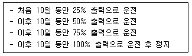
- 25일
- 30일
- 35일
- 40일
(정답률: 알수없음)
66. 원자로를 일정기간 동안 정상 임계상태로 유지하면서 정격출력으로 운전을 계속하기 위해서는 충분한 잉여반응도를 갖도록 핵연료를 장전해야 한다. 다음 중 그 이유가 아닌 것은?
- 연료의 연소로 인한 반응도 감소분을 보상하기 위해
- 핵분열 생성물에 의한 반응도 감소분을 보상하기 위해
- 온도 궤환효과에 의한 반응도 감소분을 보상하기 위해
- 화학적 독물질에 의한 반응도 감소분을 보상하기 위해
(정답률: 알수없음)
67. 가압경수로에서는 주기초 잉여반응도 제어를 위해 가연성 흡수봉을 사용한다. 다음 중 가연성 흡수봉의 독물질로 사용하기에 적합한 물질을 옵바르게 연결한 것은?
- 가, 나
- 가, 다
- 나, 다
- 가, 나, 다
(정답률: 알수없음)
68. U235를 핵연료로 사용하는 가압경수로에서 출력을 0%에서 10%로 증가시켰을 때, 핵연료 온도가 295℃에서 695℃로 증가하였고, 감속재 온도 또한, 295℃에서 315℃로 증가하였다. 이 원자로의 핵연료 온도계수(FTC) 및 감속재 온도계수(MTC)가 각각 –3pcm/℃ 및 –30pcm/℃이라면, 핵연료 온도 및 감속재 온도 증가로 인한 출력결손(Power Defect)은 얼마인가?
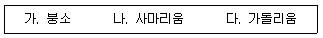
- -2400pcm
- -1800pcm
- -1200pcm
- -600pcm
(정답률: 알수없음)
69. 노심의 반응도에 영향을 미치는 것은 여러 가지가 있다. 다음 중 가장 빠르게 반응하는 변수는?
- Xe, Sm의 농도변화
- 가연성 독물질의 연소
- 플루토늄의 축적
- 등온 온도계수(ITC)의 변화
(정답률: 알수없음)
70. 다음 중 전력수요 변화에 신속하게 대응하기 위한 노심출력 제어방법으로 적당하지 않은 것은?
- 제어봉의 삽입과 인출
- 가연성 흡수봉의 개수 조절
- 붕산농도 조절
- 냉각재 평균온도 변화
(정답률: 알수없음)
71. 정상출력운전 중 증기발생의 수위증가가 일어나는 경우는?
- 주복수기 덤프밸브 개방
- 터빈 정지밸브 닫힘
- 터빈출력의 급격한 감발
- 주증기 차단밸브 닫힘
(정답률: 알수없음)
72. 공학적 안전설비 작동신호 중 냉각재상실사고(LOCA)가 발생하면 냉각재 재고량을 유지하기 위한 작동신호는?
- 격납건물격리작동신호(CIAS)
- 격납건물살수작동신호(CSAS)
- 안전주입 작동신호(SIAS)
- 보조급수공급 작동신호(AFAS)
(정답률: 알수없음)
73. 비상 노심냉각계통 ECCS의 안전주입계통 A, B 계열로 구성되어 있다. 안전주입 계통의 A계열과 B계열은 모선이 서로 다른 전원으로 수전 받는데 이와 관련한 안전설비 설계요건은?
- 다중성
- 독립성
- 다양성
- 고장시안전
(정답률: 알수없음)
74. 다음 중 냉각재상실사고(LOCA), 증기발생기튜브파열사고(SGTR), 주증기관파열사고(SLB)의 공통증상이 아닌 것은?
- 냉각재 계통 가압기 수위 감소
- 냉각재계통 압력 감소
- CVCS 체적제어탱크(VCT) 수위 감소
- 원자로 격납건물 압력 상승
(정답률: 알수없음)
75. 다음 국내원전과 후쿠시마 원전과의 안전설비 등에 대한 비교 설명 중 틀린 것은?
- 후쿠시마 원전은 비상발전기 설치 대신 안전모선의 전원을 송전선로에서 수전한다.
- 원자로에서 핵분열로 생성된 열이 증기발생기를 통해 급수를 가열하여 생성된 증기가 터빈 발전기를 구동시키는 것이 가압경수로이다.
- 원자로 정지신호 발생 시 가압경수로(PWR)는 제어봉이 상부에서 자유 낙하되는 반면, 비등경수로(BWR)는 하부에 설치된 제어봉이 가압된 질소압력 또는 스프링의 복원 힘에 의해 노심에 삽입된다.
- 가압경수로는 비등경수로에 비해 격납용기 체적이 커 격납건물 내에서 수소연소에 의한 위험성이 상대적으로 작다.
(정답률: 알수없음)
76. 체르노빌 원전 및 후쿠시마 원전사고는 국제원자력기구(IAEA)의 사고 고장등급(INES)을 기준할 때, 몇 등급에 해당하는 사고인가?
- 1등급
- 3등급
- 5등급
- 7등급
(정답률: 알수없음)
77. 가압경수로에서 원자로건물 살수계통의 기능이라 볼 수 없는 것은?
- 발전소 냉각 시 우선적으로 정지냉각을 위해 사용
- 사고 후 워자로 격납건물 온도, 압력의 상승을 억제
- 원자로 격납건물 대기로부터 제거된 요오드를 수용상태로 유지
- 살수의 pH를 제어
(정답률: 알수없음)
78. 원자로에 정(+)반응도가 삽입될 때 정지제어봉 그룹은 어떤 상태에 있어야 하는가?
- 완전히 삽입된 상태
- 완전히 인출된 상태
- 중간 위치에서 조절된 상태
- 어떤 위치에서 상관 없다.
(정답률: 알수없음)
79. 원자력발전소에서 사용하는 압력용기에 관한 설명 중 틀린 것은?
- 최대 운전압력에 안전 여유도를 더하여 설계압력을 결정한다.
- 최대 운전압력은 일반적으로 정상 운전압력보다 5% 정도 증가한 압력이다.
- 설계압력은 최대 운전압력보다 10% 이상이다.
- 설계압력은 경우에 따라서 최대 운전압력괃 동일할 수 있다.
(정답률: 알수없음)
80. 다음 중 가압경수로가 설계기준사고 또는 중대사고에 의해 발생되는 수소를 제어하는 설비가 아닌 것은?
- 수소 냉각계통
- 열수소 재결합기
- 피동촉매형 수소 재결합기
- 수소점화기
(정답률: 알수없음)
5과목: 방사선이용 및 보건물리
81. U238이 Pb206으로 붕괴하는 필요한 알파붕괴 및 베타붕괴의 횟수는? (단, U 및 Pb의 원자번호는 각각 92 및 82이다.)
- 6회, 4회
- 6회, 6회
- 8회, 4회
- 8회, 6회
(정답률: 알수없음)
82. 납과 폴리에틸렌으로 2MeV의 중성자를 차폐할 경우 선량률을 최소로 하기 위한 차폐체의 배치로 옳은 것은?
- 납만을 이용하여 차폐
- 폴리에틸렌만을 이용하여 차폐
- 납과 폴리에틸렌 순서로 차폐
- 폴리에틸렌과 납 순서로 차폐
(정답률: 알수없음)
83. 2MeV 감마선을 반도체 검출기를 이용하여 에너지 스펙트럼을 분석할 때, 나타나는 피크 중 에너지가 높은 것부터 나열한 것은?
- 광전피크 → 소멸감마선피크 → 단일이탈피크 → Compton Edge
- Compton Edge → 단일이탈피크 → 이중이탈피크 → 후방산란피크
- 단일이탈피크 → 이중이탈피크 → 소멸감마선 피크 → 광전피크
- 소멸감마선피크 → 콤프톤 단 → 이중이탈피크 → 단일이탈피크
(정답률: 알수없음)
84. 5MeV 중성자가 인체에 입사하였을 때, 신체조직이 받는 방사선량의 주된 요인은?
- 감마선
- 양자
- 방사화 생성물
- 저에너지 중성자
(정답률: 알수없음)
85. 10MeV의 광자가 1L부피의 물에 입사하여 쌍전자 생성을 일으켰다. 4MeV 에너지의 광자가 물에서 외부로 방출되었을 경우 물의 커마(KERMA) 값은 약 얼마인가?
- 1.6×10-13Gy
- 8×10-13Gy
- 1.12×10-12Gy
- 1.44×10-12Gy
(정답률: 알수없음)
86. 기체형 의 방사선 방호에 대한 기준으로 맞는 것은? (단, 기체형 의 호흡에 의한 선량환산인자 e50=2×10-8Sv/Bq)
- 유도 공기중 농도 : 4×102Bq/m3
- 유도 공기중 농도 : 1×102Bq/m3
- 연간 섭취한도 : 2.5×105Bq/year
- 연간 섭취한도 : 2.5×106Bq/year
(정답률: 알수없음)
87. 어떤 작업자가 내부피폭으로 알파선에 의해 폐에 12mGy 피폭하였으며, 외부 감마선으로 인해 전신에 40mGy로 피폭하였다. 이 작업자의 폐에 피폭한 등가선량은?
- 52mSv
- 100mSv
- 220mSv
- 280mSv
(정답률: 알수없음)
88. 다음 중 내부피폭 평가에 대한 설명으로 틀린 것은?
- 일반적으로 폐에 침적된 불용성 핵종은 전신계측법으로 평가한다.
- 3H, 90Sr등과 같은 순 베타방출제는 전신계측법으로 측정한다.
- 감마에너지가 낮아 전신계측으로 검출이 어려울 경우 생체 시료분석법으로 평가한다.
- 알파 방사능과 같은 핵종은 생체 시료분석법으로 평가한다.
(정답률: 알수없음)
89. 다음 중 속중성자의 선량계측에 직접 사용할 수 있는 것은?
- 유리선량계
- 필름뱃지
- 고체비적검출기
- 화학선량계
(정답률: 알수없음)
90. 다음 설명 중 옳은 것은?
- 베타선의 차폐에서 가장 문제가 되는 것은 특성 X선에 의한 것이다.
- 알파선의 경우 대개 베타선보다 제동복사 발생비율이 높다.
- 베타선은 Z가 작은 물질로 먼저 차폐 후 납 등으로 광자를 차폐한다.
- 협역빔에 비해 광역 빔의 감마선은 재생 인자를 고려하지 않아도 된다.
(정답률: 알수없음)
91. 다음 중 엑스선 발생장치에 대한 설명으로 틀린 것은?
- 관전압은 발생하는 엑스선 최대에너지에 주로 영향을 준다.
- 엑스선 발생장치의 양극에서는 입사한 전자에너지의 대부분이 열로 전환되므로 열전도율이 좋은 재질로 양극을 감싼다.
- 엑스선 발생장치 표적물질의 Z가 높을수록 제동복사가 잘 일어난다.
- 고에너지 방사선에 의한 불필요한 피폭을 방지하기 위해 필터를 사용한다.
(정답률: 알수없음)
92. GM 계수기의 불감시간에 대한 설명으로 틀린 것은?
- 불감시간은 내장된 기체의 종류와는 무관하다.
- 불감시간이 발생하는 이유는 양극에 존재하는 공간전하 때문이다.
- 외부소멸법을 사용하는 GM계수기는 불감시간이 길다.
- 불감시간 측정법에는 2선원법과 붕괴선원법 등이 있다.
(정답률: 알수없음)
93. 다음 중 전리함에 대한 설명으로 틀린 것은?
- 전리함은 통상 3MeV 이하의 광자에 대한 조사선량 측정이 가능하다.
- 전리함은 입사 방사선의 선질 구분이 가능하다.
- 인가전압이 증가되면 발생되는 이온쌍의 수가 비례하여 입사 방사선량 측정이 가능하다.
- 개인선량 감시의 목적으로 소형 전리함인 포켓 선량계가 사용된다.
(정답률: 알수없음)
94. 다음 중 선스펙트럼 분포를 가지는 방사선으로 올바르게 연결된 것은?
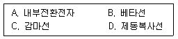
- A, C
- B, D
- A, B, C
- B, C, D
(정답률: 알수없음)
95. 다음 핵종을 내장하고 있는 밀봉선원 중 차폐 시 제동복사선에 가장 주의를 가져야 하는 것은?
- 14C
- 85Kr
- 90Sr
- 147Pm
(정답률: 알수없음)
96. 다음 설명 중 틀린 것은?
- 전자평형이 이루어지기 위해서 1차 방사선장이 균질해야 한다.
- 유기 섬광검출기는 감마선 핵종분석에 적합하지 않다.
- GM계수기의 충전기체로 사용되는 할로겐 기체는 유기가스에 비해 수명이 짧다.
- 유기 섬광물질은 무기 섬광물질에 비해 천이속도가 빠르다.
(정답률: 알수없음)
97. Nal(Tl) 섬광계수기로 측정하기에 적당한 핵종끼리 연결한 것은?
- 3H, U238
- 14C, Th232
- 90Sr, 137Cs
- 40K, I131
(정답률: 알수없음)
98. 전기용량 1pF인 전리함(체적 10cc)에 10mR의 조사선량을 조사 시 발생하는 전압강하는 약 얼마인가? (단, 내장된 기체의 밀도는 1.293×10-6kg/cm3이다.)
- 15.4V
- 22.3V
- 27.2V
- 33.3V
(정답률: 알수없음)
99. 시료계수율이 10,000cpm인 경우 표준편차가 계수율의 1%가 되기 위해서는 얼마나 오래 계측해야 하는가?
- 1분
- 3분
- 5분
- 10분
(정답률: 알수없음)
100. 다음 설명 중 틀린 것은?
- 물리적 반감기가 매우 길면 유효 반감기는 생물학적 반감기와 같다.
- 결정적 영향의 발단선량 값은 통상 집단 1%에서 발현되는 최저 선량 값이다.
- 방사선 피폭과 결정적 영향의 발현현상은 인과관계가 필연적이다.
- 결정적 영향은 선량을 발단선량 이하로 유지하면 합리적 범위에서 최소화 할 수 있다.
(정답률: 알수없음)
가연성 독물질은 연소되면서 열을 발생시키고, 이 열로 인해 노심의 반응도를 부분적으로 보상하며, 더 많은 신연료를 장전할 수 있게 합니다. 또한, 주기초 붕소농도가 높을 때 감속재 온도계수가 정(+)이 되는 것을 방지합니다. 마지막으로, 가연성 독물질은 노심의 수직방향 출력분포를 균일화합니다. 이는 가연성 독물질이 연소되면서 발생하는 가스가 노심 주변에 균일하게 분포되어, 노심의 출력분포를 균일하게 만들어줍니다.